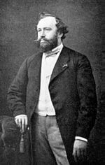

Adolphe Sax ( Joseph Sax, Dinant, de Bélgica, – 6 de noviembre de 1814 – París, 4 de febrero de 1894) fue un fabricante de instrumentos musicales. Es más conocido por haber inventado el saxofón. El nombre de saxofón proviene de su nombre, “Sax”, y de “fono” (que significa sonido); es decir, “sonido de Sax”. Desde joven fabricó instrumentos e interpretó el clarinete. Como percibió imperfecciones en este último instrumento, se dedicó a superarlas y ello le condujo a diseñar el saxofón. Estuvo fascinado con la idea de inventar un instrumento de viento que, por su timbre y carácter, pudiera aproximarse a los instrumentos de cuerda, pero que al mismo tiempo tuviera más intensidad y más fuerza. Al modificar algunas de las características en calidad del sonido, y en la resolución de problemas acústicos que tenía el clarinete, Adolphe Sax diseña y construye en 1840 lo que hoy se conoce como saxofón. Tuvo lugar en Bruselas, capital de Bélgica, en un taller de instrumentos de música que tenía su padre. Al principio, como es de suponer, tan sólo el propio Sax era quien tocaba su saxofón construido por él. Lo tocó por primera vez ante el público en la ciudad de Bruselas en 1841.
En 1842, el joven fabricante llega a París con su saxofón y recibe una gran acogida por los compositores de la época. Luego de esfuerzos constantes para conseguir su perfeccionamiento, lo que hoy conocemos como la familia de los saxofones, fue patentada en París el 28 de Junio de 1846. En 1844, Héctor Berlioz compuso la primera obra que se conoce para este instrumento, que es el sexteto Canto Sagrado, y que fue estrenada el 3 de Febrero de1844, bajo la batuta del propio Berlioz y con Adolfo Sax en la interpretación de su saxofón. En diciembre de 1844 se produce la primera aparición del saxofón con orquesta en el oratorio de G. Kastner Le dernier Roi de Judá. El interés despertado por el nuevo instrumento produjo a su inventor muchos sinsabores y desavenencias con otros fabricantes e inventores de instrumentos y hasta con intérpretes, ya que veían un peligro en el saxofón. En 1845 perfecciona y patenta el fliscorno a partir de un bugle de llaves ideado por Kent. En 1854, Adolfo Sax fue nombrado en Francia como «fabricante de instrumentos musicales de la Casa Militar del Emperador». En 1857, para los integrantes de las bandas militares en el Conservatorio de París, se crearon cátedras especiales para el saxofón, dirigidas por el mismo Sax. Por razones financieras, hacia 1870, fueron cerradas. Sin embargo en la década de 1920, el saxofón tuvo un gran auge debido a la aparición del jazz.